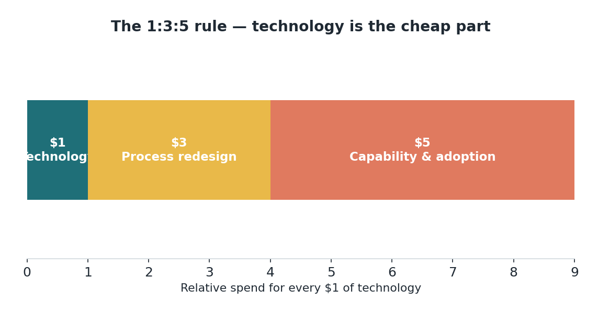
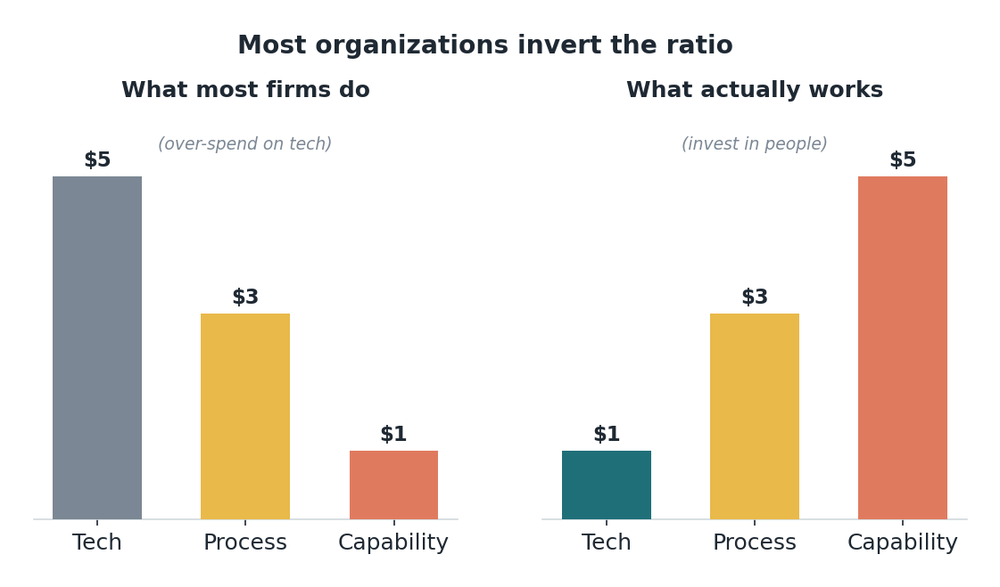

Edisi 10 — Aturan 1:3:5: teknologi itu justru bagian yang murah
Dua tim beli agent yang sama buat tugas yang sama. Tim Satu menghabiskan hampir semua budgetnya buat teknologinya dan nunggu penghematan datang. Tim Dua menghabiskan sedikit buat tool-nya dan banyak buat merancang ulang alur kerja, melatih orang, dan mendampingi mereka lewat perubahan. Setahun kemudian Tim Satu punya software mahal yang nggak dipakai siapa-siapa; Tim Dua punya proses yang berubah total. Tool-nya sama, hasilnya berlawanan — dan satu rasio menjelaskan kenapa.
Ini aturan 1:3:5: untuk setiap $1 di teknologi AI, siapkan kira-kira $3 buat redesain proses dan $5 buat membangun kapabilitas dan adopsi. Teknologinya itu bagian yang murah — dan kebanyakan organisasi membalik rasionya, kebanyakan belanja di tools dan kurang belanja di orang. Pembalikan itu adalah kesalahan paling umum dan paling mahal di lapangan.

Kenapa ini kabar baik buat tim yang teliti. Nilai dari sebuah agent baru terealisasi kalau alur kerjanya dirancang ulang buat memakainya dan orang-orang di sekitarnya bisa menjalankan dan mempercayainya. Belanja banyak di tool-nya dan sedikit di dua hal itu, dan kamu udah beli kapabilitas yang nggak bisa kamu konversi — bukan karena agent-nya lemah, tapi karena nggak ada yang berubah di sekelilingnya. Teknologinya menetapkan langit-langitnya; proses dan kapabilitas yang menentukan seberapa jauh kamu mencapai langit-langit itu. Jadi kesuksesan bukan milik siapa pun yang belanja software paling banyak. Itu milik siapa pun yang paling jago ngerjain kerja manusianya — permainan yang bisa dimenangkan tim yang disiplin dan penuh perhitungan, berapa pun budgetnya. Aturan 1:3:5 memberi keuntungan ke yang teliti, bukan yang kaya.
Ini mengubah perhitungan ROI dan seluruh seri ini. Investasi sebenarnya buat setiap $1 teknologi itu sekitar $9 all-in, dan $8 dari proses dan orang itulah yang menang atau kalahnya return. Jadi waktu saya minta kesabaran buat redesain sebuah alur kerja atau waktu buat orang belajar, saya bukan lagi memperlambat proyeknya — saya lagi membelanjakan 89% budget yang benar-benar menentukan berhasil atau nggaknya. Obrolan coaching dan change-leadership itu bukan pelengkap lembut buat kerja yang beneran; dalam kerangka ini, itu-lah kerja yang beneran.

Buat yang suka metrik, perhatikan spend mix-nya sebagai indikator awal. Kalau sebuah program menghabiskan 70% buat teknologi, siap-siap underperform sebagus apa pun tool-nya; program yang bentuknya lebih dekat ke 1:3:5 secara struktural sudah diset up buat berhasil. Dan konsekuensinya cukup menohok: beli teknologi yang lebih bagus jarang jadi solusi buat program AI yang lagi struggling. Solusinya hampir selalu redesain proses dan investasi di orang — bagian yang nggak keliatan keren pas demo tapi menentukan hasilnya.
Jadi ini satu angka yang saya harap dibawa setiap orang di direktorat kita ke obrolan planning berikutnya: 1:3:5. Waktu sebuah proposal isinya 90% software dan 10% sisanya, sekarang kamu tahu rasionya kebalik dan cara membetulkannya — danai orang-orang dan prosesnya seolah-olah itulah intinya, karena memang itulah intinya. Edisi berikutnya, kita masuk ke bagian pertama dari belanja-orang itu secara konkret: bagaimana belief itu sebenarnya menyebar di sebuah tim.
Sumber
- Pola 1:3:5; kebanyakan perusahaan membaliknya — McKinsey, "How to close the agentic adoption gap" (7 Agustus 2026).